Cylinder Block Inspection/Repair
CYLINDER BLOCK INSPECTION / REPAIR
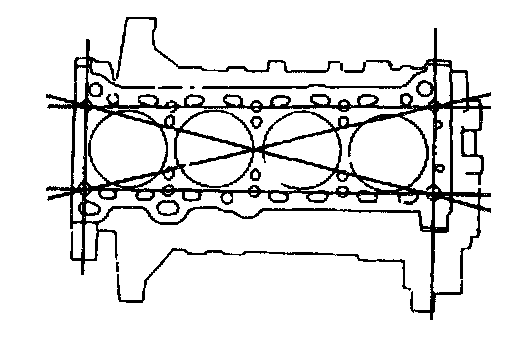
1. Measure the distortion of the cylinder block top surface in the six directions as shown. Repair by grinding or replace as necessary.
Cylinder block distortion 0.15 mm (0.006 inch) maximum
Cylinder block height 221.5 mm (8.720 inch)
Grinding 0.20 mm (0.008 inch) maximum
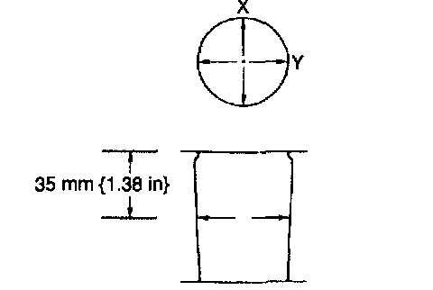
2. Measure the cylinder bores in X and Y directions at 35 mm (1.38 inch) below the top surface.
3. If the cylinder bore exceeds the wear limit, replace the cylinder block or rebore the cylinder and install the oversize pistons so that the specified piston-to-cylinder clearance is obtained.
^ Note: Base the boring diameter on the diameter of an oversize piston. All cylinders must be the same diameter.
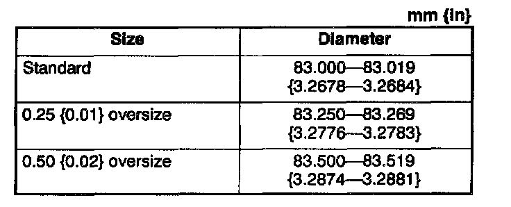
Cylinder Bore
Wear limit 0.15 mm (0.006 inch)
Oil Jet Inspection
1. Apply compressed air to oil jet valve A and verify that air passes through oil jet valve B. If not, replace the oil jet valve.
Air pressure 167 - 225 kPa (1.7 - 2.3 kgf/cm2, 25 - 32 psi)
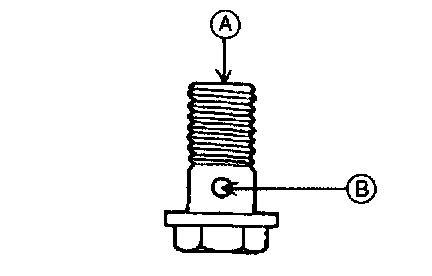
2. Inspect the oil jet nozzle for clogs. Replace the nozzle as necessary.
Piston Inspection
^ Measure the outer diameter of each piston at right angle (90°) to the piston pin, 16.5 mm (0.650 inch) below the oil ring groove lower edge.
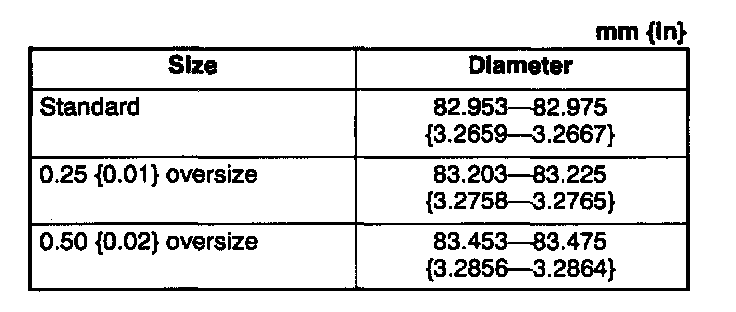
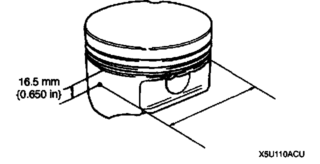
Piston diameter
Piston Clearance Inspection / Repair
1. Calculate the piston-to-cylinder clearance. Replace the piston or rebore the cylinders to fit oversize piston as necessary.
Standard clearance 0.025 - 0.066 mm (0.0010 - 0.0025 inch)
Maximum clearance 0.15 mm (0.006 inch)
2. It the piston is replaced, the piston rings must also be replaced.
Piston Ring Clearance Inspection
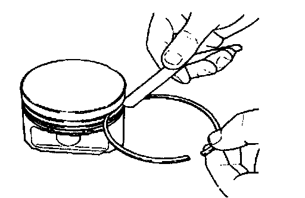
1. Measure the piston ring-to-ring land clearance around the entire circumference. Replace the piston and piston ring as necessary.
Standard clearance
Top : 0.030 - 0.065 mm (0.0012 - 0.0025 inch)
Second: 0.030 - 0.070 mm (0.0012 - 0.0027 inch)
Oil: 0.07 - 0.16 mm (0.003 - 0.006 inch)
Maximum clearance
Top, Second: 0.15 mm (0.0061 inch)
Oil: 0.20 mm (0.008 inch)
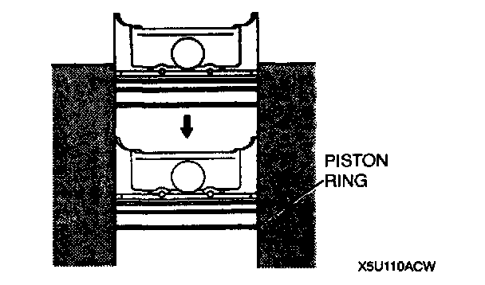
2. Insert the piston ring into the cylinder by hand and use the piston to push it to the bottom of the ring travel.
3. Measure each piston ring end gap by using a feeler gauge. Replace the piston ring as necessary.
Standard end gap
Top: 0.15 - 0.30 mm (0.006 - 0.011 inch)
Second: 0.30 - 0.45 mm (0.012 - 0.017 inch)
Oil rail: 0.20 - 0.70 mm (0.008 - 0.027 inch)
Maximum end gap 1.0 mm (0.039 inch)
Piston Pin Clearance Inspection
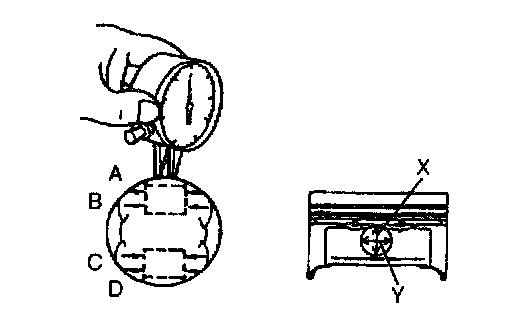
1. Measure each piston pin hole diameter in X and Y directions at the four points (A, B, C, and D) as shown.
Standard diameter 19.988 - 20.000 mm (0.7870 - 0.7874 inch)
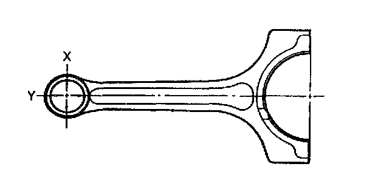
2. Measure each connecting rod small end inner diameter in X and Y directions as shown.
Standard diameter 20.003 - 20.014 mm (0.7876 - 0.7879 inch)
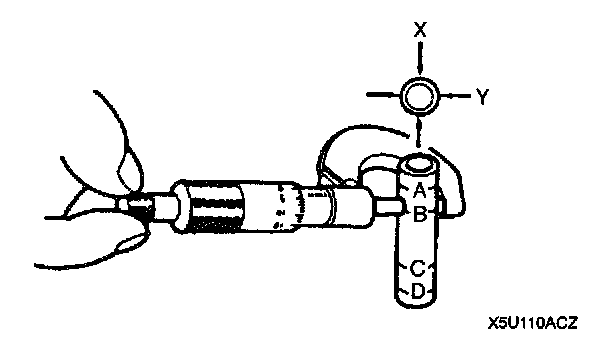
3. Measure each piston pin diameter in X and Y directions at the four points (A, B, C, and D) as shown.
Standard diameter 19.987 - 19.993 mm (0.7869 - 0.7871 inch)
4. Calculate the piston pin-to-piston pin bore clearance. Replace the piston and/or piston pin as necessary.
Standard clearance -0.005 - 0.013 mm (-0.0002 - 0.0005 inch)
5. Calculate the connecting rod small end-to-piston pin clearance. Replace the connecting rod or piston pin.
Standard clearance 0.010 - 0.027 mm (0.004 - 0.0010 inch)
Crankshaft Inspection
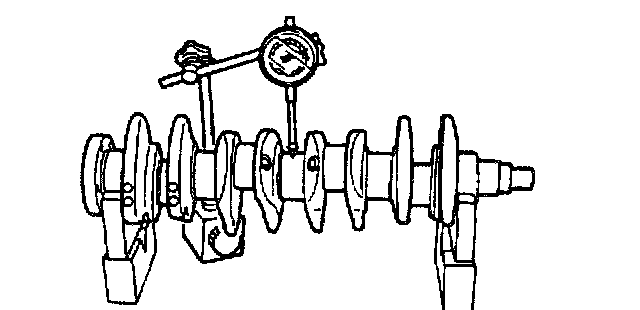
1. Measure the crankshaft runout. Replace the crankshaft as necessary.
Runout 0.04 mm (0.0016 inch) maximum
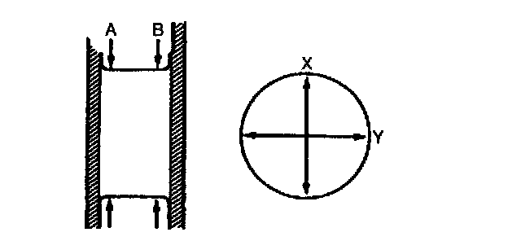
2. Measure the journal diameter in X and Y direction at the two points (A and B) as shown. Replace the crankshaft or grind the journal and install the undersized bearing as necessary.
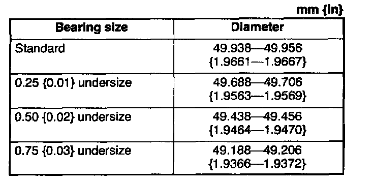
Main Journal
Out-of-round 0.05 mm (0.002 inch) maximum
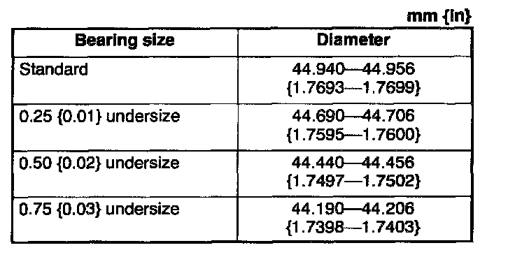
Crank Pin
Out-of-round 0.05 mm (0.002 inch) maximum
Crankshaft Oil Clearance Inspection / Repair
1. Position plastigage on the top of the journals in the axial direction.
2. Install the main bearing cap.
3. Remove the main bearing cap.
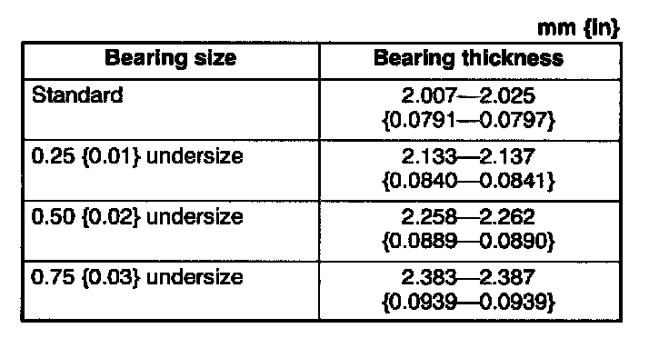
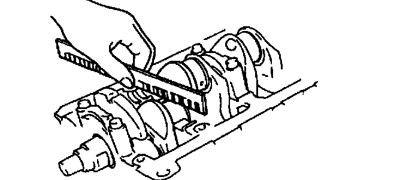
4. Measure the main journal oil clearance, If the clearance exceeds the maximum, replace the main bearing or grind the main journal and install the undersized bearings so that the specified oil clearance is obtained.
Standard clearance 0.018 - 0.036 mm (0.0008 - 0.0014 inch)
Maximum clearance 0.10 mm (0.0039 inch)
Crankshaft End Play Inspection / Repair
1. Install the main bearing cap.
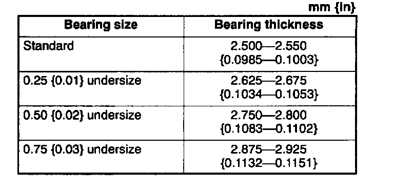
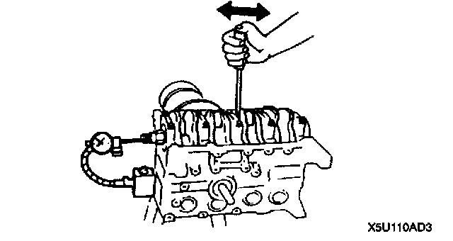
2. Measure the crankshaft end play. If the end play exceeds the maximum, replace the thrust bearing or grind the crankshaft and install an undersized bearing so that the specified end play is obtained.
Standard end play 0.080 - 0.282 mm (0.0032 - 0.0111 inch)
Maximum end play 0.30 mm (0.012 inch)
3. Remove the main bearing cap.
Connecting Rod Inspection
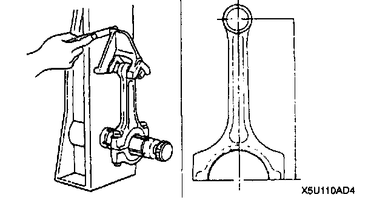
^ Measure each connecting rod for bending and distortion. Replace the connecting rod as necessary.
Bending 0.05 mm (0.0020 inch) maximum /50 mm (1.97 inch)
Distortion 0.07 mm (0.0028 inch) maximum /50 mm (1.97 inch)
Center-to-center distance 132.85 - 132.95 mm (5.2304 - 5.2342 inch)
Connecting Rod Oil Clearance Inspection/Repair
1. Position a plastigage on the top of the journals in the axial direction.
2. Install the connecting rod cap.
3. Remove the connecting rod cap.
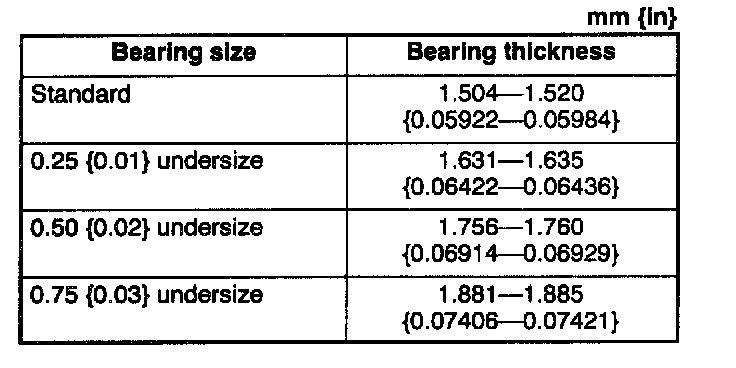
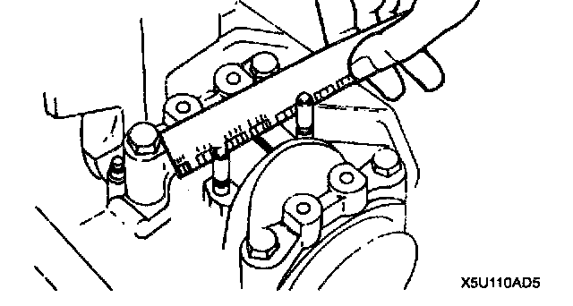
4. Measure the crankpin oil clearance. If the clearance exceeds the maximum, replace the connecting rod bearing or grind the crankpin and use undersized bearings so that the specified clearance is obtained.
Standard clearance 0.028 - 0.048 mm (0.0012 - 0.0018 inch)
Maximum clearance 0.10 mm (0.0039 inch)
Connecting Rod Side Clearance Inspection
1. Install the connecting rod cap.

2. Measure the connecting rod large end side clearance. Replace the connecting rod and cap as necessary.
Standard clearance 0.110 - 0.262 mm (0.005 - 0.010 inch)
Maximum clearance 0.30 mm (0.012 inch)
3. Remove the connecting rod cap.
Piston and Connecting Rod Inspection
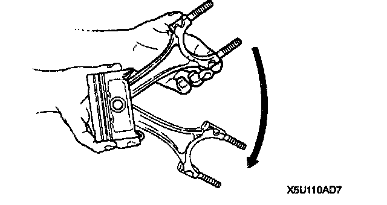
^ Inspect the oscillation torque as shown. If the large end does not drop by its own weight, replace the piston or the piston pin.
Tensioner Spring Inspection
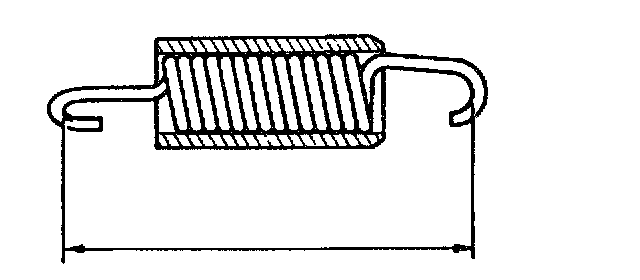
^ Measure the free length of the tensioner spring. Replace the tensioner spring as necessary.
Free length 59.2 mm (2.331 inch)